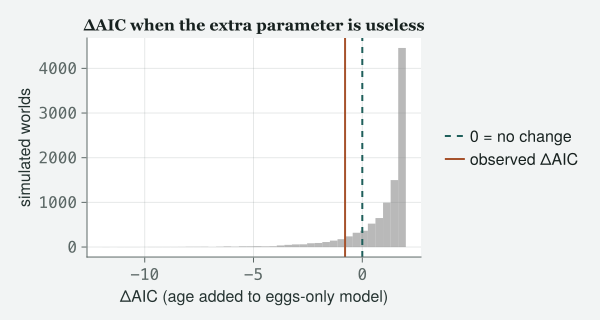

Two models fitted to the same rows can be ranked to four decimals, and the winner can still be inventing birds that cannot exist. Comparison ranks; it never validates. This hour is about what the ranking does say, what a difference of two is and is not, and the one thing no comparison can see.
Draft
Draft. Every number and figure on this page was produced when the site was built.
Engines DRM.jl 0.7.1 at 26f4c4ddc (Julia 1.10.0) · drmTMB 0.7.0 (R 4.6.0) Provenance Every code block and printed result below was actually run when the site was built, and nothing is typed from memory. Every random draw is seeded where it is made, so the page comes out the same every time. Caveat The data are real: the 2012 Lundy Island female breeding records, read directly from data/2012/FemaleSuccess.csv, and the chick-survival records in data/2012/ChickSurvival.csv for the exercises (where the files came from is recorded in data/2012/README.md). Nothing here is invented; the simulated quantities are drawn from models fitted to those files, from stated seeds.
Objectives
By the end of this class you should be able to:
Say what AIC is made of, why the parameter count is in it, and why only differences between models fitted to the same rows mean anything.
Run a likelihood-ratio test on two nested models, say what its reference distribution is and where the number of degrees of freedom comes from.
Simulate the ΔAIC of a parameter that does nothing, say how often it wins anyway, and say why “two units” is the ceiling of a useless parameter’s damage rather than its usual size.
Tell a marginal coefficient from a conditional one, and report a null result with the interval as the bound on the effect and the smallest effect the design could have seen as its sensitivity, rather than with the words “no effect”.
Say why two models can only be compared when they were fitted to the same rows, what the arithmetic does when they were not, and why the winner of any comparison still has to be checked on its own.
The class
Itchy’s office, the second hour. Nobody has left. MOMO’s repaired
fledgling model is still on her screen, convicted of its zeros. TOTO
has, unprompted, fitted a third model while nobody was looking. EDDIE
has waited a whole hour to ask for a number.
Itchy
Last hour, one model at a time: three residuals, one picture, one
recipe. Momo’s repaired model passed the check about the ceiling and
failed the check about the zeros, and we ended by naming what the
pattern pointed at — whole broods lost, which no single count family
writes — and the family or the column it would take to fit it. Every one
of those verdicts came from a model interrogated on its own, and that is
what is it any good? means. Eddie has been waiting to ask for
something else.
Eddie
You have shown me one model is worse than another by eye. Give me the
number.
Itchy
Two numbers, and they answer different questions, and neither of them
answers Eddie’s. That is this hour. Given two candidate models for the
same rows, how do you prefer one, what does the preference mean, and
what can it never tell you. Toto, you have been quiet.
Toto
I fitted a third model. I took age out and kept eggs laid. It seemed to
be what the last hour was saying.
Itchy
It is exactly what the last hour was saying, and it is the model the
whole of this one turns on, so fit all three here. Never take a fit on
trust from a previous page, even one that is an hour old.
# tools/diagnostics.jl includes tools/figures.jl, which includes# tools/theme_itchy.jl itself, so one include does all three.include("../tools/diagnostics.jl")usingDRM, DataFrames, CSV, Statistics, Random, Printf, CairoMakieimportDistributions# qualified: DRM exports its own Poisson, Binomial, …set_theme!(theme_itchy(:light))females = CSV.read("../data/2012/FemaleSuccess.csv", DataFrame)females.logEgg =log.(females.EggNo)n_fem =nrow(females)pois =drm(bf(@formula(Fledglings ~ Age)), Poisson(); data = females)pois_egg =drm(bf(@formula(Fledglings ~ logEgg)), Poisson(); data = females)pois2 =drm(bf(@formula(Fledglings ~ Age + logEgg)), Poisson(); data = females)@printf("females: %d rows; the three fits used %d, %d and %d of them\n", n_fem, nobs(pois), nobs(pois_egg), nobs(pois2))
females: 163 rows; the three fits used 163, 163 and 163 of them
Itchy
Three models, three formulas, one file, and I printed the row count of
each fit on purpose. Hold on to that line; it is the last thing on this
page and the thing you will forget first.
Two numbers, two questions
Itchy
The first number is AIC, which is Akaike’s (1974):
minus twice the log-likelihood, plus twice the number of parameters.
Both halves need saying. The log-likelihood is the
number the engine climbed to find the coefficients — the logarithm of
the probability the fitted model assigns to the rows you gave it — so a
higher one means the model finds your data less surprising. Left to
itself it would always prefer the model with more parameters, because a
fitted model has been tuned to the very data you are judging it on, so
its likelihood flatters it, and the parameter count is the charge for
that flattery. Lower is better, and only differences
mean anything: the absolute value depends on the file, on the family,
even on the units you measured the response in, so an AIC quoted on its
own is a number with no reader.
for (nm, f) in (("Fledglings ~ Age", pois), ("Fledglings ~ logEgg", pois_egg), ("Fledglings ~ Age + logEgg", pois2))@printf("%-28s k = %d logLik %10.4f AIC %9.4f\n", nm, dof(f), loglik(f), aic(f))enddaic_egg =aic(pois2) -aic(pois)daic_age =aic(pois2) -aic(pois_egg)@printf("\nadding log(eggs) to the age model : dAIC %+.4f\n", daic_egg)@printf("adding age to the eggs-only model : dAIC %+.4f\n", daic_age)
Fledglings ~ Age k = 2 logLik -367.9932 AIC 739.9864
Fledglings ~ logEgg k = 2 logLik -324.8066 AIC 653.6131
Fledglings ~ Age + logEgg k = 3 logLik -323.4104 AIC 652.8208
adding log(eggs) to the age model : dAIC -87.1656
adding age to the eggs-only model : dAIC -0.7923
Momo
Why is k two for a model with one covariate in it?
Itchy
Because the intercept is the other one. k counts everything the engine
estimated to get its log-likelihood, not the terms you typed after the
tilde: the intercept, every slope, and any parameter the family carries
— Class 4’s negative binomial would count θ, and the Gaussian’s σ counts
too, which is why dof is a call and not something you work
out by reading the formula. It is also why swapping a family costs a
parameter in exactly the way adding a covariate does, and why the two
are compared on the same footing.
Toto
One of those is enormous and one is nearly nothing.
Itchy
One parameter each, and that is what makes the pair worth putting side
by side. Log-eggs buys 87.2 AIC. Age, once log-eggs is already in, buys
0.79. Now the rule everybody half-remembers: a difference of about two
is the usual line, and it comes from Burnham and Anderson, who treat
models within two units of the best as having substantial support. The
line sits where it does because a parameter that buys no likelihood
at all still costs exactly that much: two times one
parameter, and nothing back. But that is the worst a useless parameter
can do, not what it typically does, and the gap between those two is
where people get hurt. Do not take it from me.
Toto
Simulate it.
Itchy
In a moment. Take the other number first, because the simulation you are
about to write turns out to be it. The second number is the
likelihood-ratio test: twice the gap in log-likelihood
between the smaller model and the larger, referred to a chi-squared
distribution with as many degrees of freedom as parameters added. It
needs the two models to be nested — the smaller one is
the larger one with some coefficients pinned at zero — and it says this:
if those pinned coefficients really are zero, twice the gap behaves, in
large samples, like a chi-squared with that many degrees of freedom
(Wilks 1938). Age added to the eggs-only model is one coefficient pinned
at zero, so one degree of freedom. It gives you a reference distribution
rather than a ranking, and that is the difference between the two
numbers. AIC tells you which model it prefers and by how much. The test
tells you how surprising the gap would be if the extra parameters did
nothing.
lr_egg =lrtest(pois, pois2)lr_age =lrtest(pois_egg, pois2)@printf("adding log(eggs) : statistic %9.4f on %d df, p = %.3e\n", lr_egg.statistic, lr_egg.dof, lr_egg.pvalue)@printf("adding age : statistic %9.4f on %d df, p = %.4f\n", lr_age.statistic, lr_age.dof, lr_age.pvalue)
adding log(eggs) : statistic 89.1656 on 1 df, p = 3.631e-21
adding age : statistic 2.7923 on 1 df, p = 0.0947
Eddie
How large is “large samples”?
Itchy
Nobody can tell you from the formula, which is the honest answer and the
reason the simulation is coming: Wilks’s result is a statement about
what happens as the rows go to infinity, and your file has 163 of them.
Whether 163 is close enough to infinity for this model is a question you
can answer only by drawing the reference distribution yourself and
seeing whether it matches the one you looked up.
Momo
The second p-value is the kind I would have called “not significant” and
moved on.
Itchy
And we will come back to what you may say instead, because “moved on” is
where most of the damage in the literature is done. Log-eggs is
overwhelming and age, given eggs, is not: 0.095, on one degree of
freedom. lrtest hands back three named fields —
statistic, dof, pvalue — and you
read them with a dot, as you read a column of a data frame.
What a useless parameter costs
Itchy
Now Toto’s simulation, and it is the same recipe as last hour with one
line changed. Last hour we simulated from a fit to ask what the fit
believed about the world. This hour we simulate from a fit to ask what a
comparison does in a world where we know the answer. Draw
worlds from the model without age in it — worlds where
age genuinely does nothing once eggs are accounted for — and in each one
fit both models and take the difference in AIC. The loop is the
empty-vector-and-push! shape from last hour, with two fits
inside it instead of one.
# A world in which age is useless: simulate from the reduced fit, then refit# BOTH models to each invented world and watch what AIC does with a parameter# that has nothing in it.rng_null_aic =MersenneTwister(777)ynull =simulate(pois_egg; nsim =10000, rng = rng_null_aic)null_daic =Float64[]for k in1:size(ynull, 2) d =DataFrame(Fledglings = ynull[:, k], Age = females.Age, logEgg = females.logEgg) a_red =aic(drm(bf(@formula(Fledglings ~ logEgg)), Poisson(); data = d)) a_full =aic(drm(bf(@formula(Fledglings ~ Age + logEgg)), Poisson(); data = d))push!(null_daic, a_full - a_red)end@printf("dAIC when the extra parameter is useless: median %+.4f, mean %+.4f\n",median(null_daic), mean(null_daic))@printf("proportion of useless-parameter worlds where dAIC is negative : %.4f\n",mean(null_daic .<0))@printf("proportion where the useless parameter wins by more than 3 : %.4f\n",mean(null_daic .<-3))@printf("proportion at or below our observed dAIC of %+.4f : %.4f\n", daic_age, mean(null_daic .<= daic_age))# For ONE extra parameter on the SAME data, dAIC = 2k_extra - LR = 2 - LR, exactly.@printf("\nour dAIC %+.4f versus 2 - LR statistic %+.4f\n", daic_age, 2- lr_age.statistic)@printf("simulated tail probability %.4f versus the chi-squared p above %.4f\n",mean(null_daic .<= daic_age), lr_age.pvalue)# The chi-squared's own 5% line, applied to the same worlds: how often does the# test reject a parameter that does nothing? It promises one world in twenty.crit = Distributions.quantile(Distributions.Chisq(1), 0.95)size_lrt =mean((2.- null_daic) .> crit)# how well this many worlds pin a rate of 5%: the binomial SE of that proportionmc_se =sqrt(0.05*0.95/length(null_daic))@printf("useless-parameter worlds where the test rejects at 5%% : %.3f (%.1f simulation SEs above 0.05)\n", size_lrt, (size_lrt -0.05) / mc_se)
dAIC when the extra parameter is useless: median +1.5421, mean +0.9930
proportion of useless-parameter worlds where dAIC is negative : 0.1608
proportion where the useless parameter wins by more than 3 : 0.0258
proportion at or below our observed dAIC of -0.7923 : 0.0952
our dAIC -0.7923 versus 2 - LR statistic -0.7923
simulated tail probability 0.0952 versus the chi-squared p above 0.0947
useless-parameter worlds where the test rejects at 5% : 0.052 (0.9 simulation SEs above 0.05)
fig =Figure(size = (600, 320))ax =Axis(fig[1, 1]; xlabel ="ΔAIC (age added to eggs-only model)", ylabel ="simulated worlds", title ="ΔAIC when the extra parameter is useless")hist!(ax, null_daic; bins =40, color = (:grey, 0.55))vlines!(ax, [0.0]; linestyle =:dash, linewidth =2, label ="0 = no change")vlines!(ax, [daic_age]; linewidth =2, color =Cycled(2), label ="observed ΔAIC")# legend outside the axis so it can never hide a group (house rule: tools/figures.jl)Legend(fig[1, 2], ax; framevisible =false)fig

Figure 1: ΔAIC for adding age to the eggs-only model, across 10,000 worlds simulated from a fit where age is genuinely useless. The dashed line at 0 marks equal AIC; the solid line marks the ΔAIC actually observed on the real data. Part of the bar sits left of 0 — a useless parameter still wins by chance sometimes — and the observed value sits inside that same bulk, not out past it.
Toto
It goes negative sometimes.
Itchy
It goes negative in 16% of worlds where the parameter is worth nothing,
because the likelihood always improves a little by chance and now and
then improves by more than the parameter cost. Its typical value is
1.54, not two — so “two units” is the ceiling on a useless parameter’s
damage, not its usual size. And 3% of worlds have a useless parameter
winning by more than three AIC. Our own 0.79 turns up in 10% of worlds
where age does nothing at all. That is Arnold’s (2010) point about
uninformative parameters, computed on our own data rather than borrowed
from his: a model within two units of the best has usually bought a
parameter and nothing else.
Eddie
Those two printed lines near the bottom are the same test twice.
Itchy
They are. For one extra parameter on the same rows, ΔAIC is two minus
the likelihood-ratio statistic, exact to every digit, so the null I have
just simulated is the chi-squared null, drawn rather
than looked up: my simulated 0.095 is lrtest’s printed
0.0947 by brute force.
Toto
Then why simulate it, if it is the same number?
Itchy
Because the simulation does not buy a second opinion; it buys
the calibration of the first one — how far the chi-squared
approximation can be trusted at this sample size, which Wilks’s formula
cannot tell you and ten thousand worlds can. The last printed line is
that calibration in one number: the test’s five-per-cent line rejected
in a proportion 0.052 of the worlds where age did nothing, against the
one in twenty it promises. Before you read that as a gap, ask how well
the worlds can measure it: ten thousand of them pin a rate of one in
twenty to about 0.002 either way, and the difference is 0.9 of those
widths — chance, and nothing else. So at 163 rows, for this model, the
reference distribution you would have drawn is the one you looked up,
and the simulation’s verdict is that the lookup is honest. Notice what
decided that. A thousand worlds would have pinned the same rate only to
about 0.007, and a rate that wanders that far from one seed to the next
can look like a finding when it is noise; the number of worlds is what
decides whether a simulation can answer the question you put to it, so
report the simulation’s own error bar beside its answer, every time.
Momo
Can I live with it?
Itchy
Here, yes, and you now know why rather than hoping. Ours is 0.09, and a
lookup this well calibrated is worth reading wherever it lands, near the
line included. What you may not do is carry that verdict to another
model or another file: calibration is a property of the model, the
family and the rows, not of the test, and it is a two-line simulation
each time. In Class 8 the looked-up number is not worth reading at all,
because testing a variance at zero puts the null on a boundary and the
same chi-squared is wrong by a factor you can compute — and the recipe
you have just run is what shows it.
Momo
So age does not matter.
Itchy
No. Say what the data say, which is narrower and more useful, and it
takes the next ten minutes.
Two questions, not two answers
Itchy
You have two estimates of the effect of age on the table, one from each
model, and the temptation is to read the second as the correction of the
first. Put them side by side, on the scale the biology lives on.
b1, se1 =coef(pois, :mu), stderror(pois)b2, se2 =coef(pois2, :mu), stderror(pois2)# a Poisson coefficient is a log rate ratio; exp() puts it back in chicks per chickrr_age1 =exp(b1[2]); lo_age1, hi_age1 =exp(b1[2] -1.96* se1[2]), exp(b1[2] +1.96* se1[2])rr_age2 =exp(b2[2]); lo_age2, hi_age2 =exp(b2[2] -1.96* se2[2]), exp(b2[2] +1.96* se2[2])# the smallest rate ratio this design could detect four times in five, at the 5% line.# The normal's 97.5th percentile (1.96) is the two-sided 5% line; its 80th (0.84) is# the power. A true effect that many SEs from zero clears the line four times in five.z_mde = Distributions.quantile(Distributions.Normal(), 0.975) + Distributions.quantile(Distributions.Normal(), 0.80)mde_age =exp(z_mde * se2[2])# a true effect sitting exactly on the 5% line clears it only half the timerr_line =exp(Distributions.quantile(Distributions.Normal(), 0.975) * se2[2])# and the thing that connects the two questions: how eggs laid moves with ageeggfit =drm(bf(@formula(EggNo ~ Age)), Poisson(); data = females)rr_egg_age =exp(coef(eggfit, :mu)[2])@printf("rate ratio for a year of age, age alone : %.4f [%.4f, %.4f]\n", rr_age1, lo_age1, hi_age1)@printf("rate ratio for a year of age, eggs also in : %.4f [%.4f, %.4f]\n", rr_age2, lo_age2, hi_age2)@printf("smallest rate ratio this design could detect at 80%% power : %.4f\n", mde_age)@printf("rate ratio that would clear the 5%% line half the time : %.4f\n", rr_line)@printf("rate ratio for eggs laid per year of age : %.4f\n", rr_egg_age)
rate ratio for a year of age, age alone : 1.2618 [1.1490, 1.3857]
rate ratio for a year of age, eggs also in : 1.0889 [0.9859, 1.2027]
smallest rate ratio this design could detect at 80% power : 1.1527
rate ratio that would clear the 5% line half the time : 1.1045
rate ratio for eggs laid per year of age : 1.1688
Itchy
Read them together, because separately each one lies to you. Age on its
own multiplies expected fledglings by 1.262 per year, with an interval
clear of one. Age with eggs laid in the model multiplies them by 1.089,
interval from 0.986 to 1.203, which contains one. The honest sentence is
not “age stopped mattering”. It is this: these are two different
questions, and the answers are not in conflict. The first is
the marginal effect of a year of age on chicks fledged
— what a year does, letting everything that comes with a year come with
it. The second is the conditional effect of a year of
age at a fixed number of eggs — what is left of the year once
the eggs are held still. Older females lay more eggs, 1.169 times as
many per year, so most of what age does to fledgling number, it does by
laying more. The first model was not wrong about age; it was answering
the question you asked it.
Momo
Then which one do I report?
Itchy
Whichever one is your question, and you say which. If the question is
“do older females fledge more?”, the marginal one, and eggs laid is the
mechanism, not a nuisance. If the question is “are older females better
at turning an egg into a fledgling?”, the conditional one, and it says:
not detectably. Reporting the conditional coefficient as the refutation
of the marginal one is the commonest misreading of a regression table
there is, and every extra column you add to a model changes the question
every other column is answering.
Eddie
And the part that is left, once eggs are held still?
Itchy
Is the part we cannot pin down, and there I will give you two numbers
rather than a shrug, because they do two different jobs. The first you
already have: the interval. At a fixed clutch size the rate ratio per
year of age lies between 0.99 and 1.20, and that is the only bound the
data put on the effect: ratios above the one I am about to compute sit
inside it, and have not been ruled out. The second is what the design
could see. The smallest rate ratio it could have detected four times in
five is 1.153. z_mde in the cell is where it comes from,
and it is two normal percentiles added together: the
ninety-seven-and-a-half-th, which is the two-sided five-per-cent line,
and the eightieth, which is the power. A true coefficient that many
standard errors from zero — about two and four-fifths — clears the line
four times in five; one sitting on the line, a ratio of 1.10, clears it
only half the time, and anything smaller than that would have been
missed more often than not. So the detectable effect bounds the
design, not the effect: even a true ratio of 1.15 slips past
this test one time in five, and a non-rejection rules nothing out on its
own. The sentence for the paper is not “no effect of age”, and it is not
“the effect is smaller than 1.15” either. It is: “at a fixed clutch size
the rate ratio per year of age lies between 0.99 and 1.20; the design
had eighty per cent power to detect a ratio of 1.15 or larger, so a
smaller effect could easily have been missed”.
Momo
Can I at least say the conditional effect is smaller than the marginal
one? The second interval does not even reach the first estimate.
Itchy
No, and that is the trap I wanted you to walk into before you wrote
anything down. The interval on one of those rate ratios excluding the
other one’s point estimate is not a test of the difference between them.
Both come from the same 163 females and the same variation in age, so
the two estimates are strongly correlated, and an interval built for one
knows nothing about that. An interval that excludes another
estimate’s point value is not a test of the difference. To say
in print that the conditional effect is smaller than the marginal one
you would need an error bar on the difference itself, and you do not
have one.
The refusal, and the hole
Eddie
Last thing. What stops me doing this wrong?
Itchy
Less than you would like, and knowing exactly how much less is the point
of the next five minutes. Start with what it does stop. Toto, you were
about to.
Toto
I was going to check the eggs result the other way round, to see whether
it came out the same.
lrtest(pois2, pois)
ArgumentError: lrtest: `full` must have more parameters than `reduced` (dof(full) = 2, dof(reduced) = 3; did you pass the arguments as (reduced, full)?)
(stack trace omitted)
Toto
It refused and it told me which argument was which.
Itchy
It refused, it named the rule, and it named the fix, which is what an
error message is for: reduced model first, full model second, and the
engine checks that the second has more parameters than the first. That
is the mistake everybody makes once, and the engine is the right place
to catch it, because it can see the two fits. There are other refusals
in there, all of them about models with random effects, and Class 8 is
where you meet them and learn why a refusal can be a kindness.
Momo
And what does it not stop?
Itchy
The one that will actually get you. It cannot see your data. Nobody fits
two models to different rows on purpose; it happens because the reduced
model was fitted on an earlier version of the file, or on the rows that
were complete for the columns it named and not for the extra
column the full model adds, or by a co-author who filtered something and
did not say. Class 6 meets a file where one column has holes in it and
dropmissing is the first thing done to it; fit one model
before that line and one after it, and you have done what I am about to
do deliberately. females[1:150, :] is rows one to one
hundred and fifty and every column, a colon in the column slot as in
Class 3’s matrix slices.
# A nested pair fitted to DIFFERENT ROWS: reduced on the first 150 females, full on all.first150 = females[1:150, :]pois_sub =drm(bf(@formula(Fledglings ~ Age)), Poisson(); data = first150)@printf("rows in the first fit : %d\n", nobs(pois_sub))@printf("rows in the second : %d\n", nobs(pois2))lr_sub =lrtest(pois_sub, pois2)
rows in the first fit : 150
rows in the second : 163
It gave you a p-value, it is a small one, and it is meaningless. 13 rows
are in one likelihood and not the other, so the difference in
log-likelihoods is partly a difference in how much data each one is
summing over. The same hole is in every AIC comparison you will ever
run: AIC differences are only interpretable between models
fitted to identical observations, and nothing in
aic(fit) knows what those observations were. The nasty part
is that this one came out plausible: the honest comparison on
all the rows gives 89.2, so dropping 13 rows understated a real effect
about 4-fold and still returned a decisive answer. You would never look
twice. Drop ten more rows and the arithmetic stops pretending.
pois_sub2 =drm(bf(@formula(Fledglings ~ Age)), Poisson(); data = females[1:140, :])bad =lrtest(pois_sub2, pois2)@printf("reduced fit on %d rows, full on %d\n", nobs(pois_sub2), nobs(pois2))@printf("statistic %+.4f on %d df, p = %.4f\n", bad.statistic, bad.dof, bad.pvalue)
reduced fit on 140 rows, full on 163
statistic -28.1070 on 1 df, p = 1.0000
Momo
The statistic is negative. A likelihood ratio cannot be negative.
Itchy
It cannot, not for nested models on the same rows, which is why this is
the number I wanted you to see. The larger model can always do at least
as well as the smaller one on the same data, because it can set the
extra coefficient to zero and be the smaller one; that is what
nesting means, and it is why the statistic has a floor at zero. Here the
reduced model is summing over less data, so its log-likelihood is
higher — fewer terms — and the difference comes out the wrong
way round. Then look at the p-value: exactly one, because the test takes
the larger of the statistic and zero before referring it to a
chi-squared, so an impossible statistic is reported as the most
reassuring result the test can give. That p-value is not a
warning; it is what a broken assumption looks like once the arithmetic
can no longer tell you so. The comparison is quiet only inside
the narrow window where the contamination is small enough to pass for
biology. Count your rows. Every time. It is one call to
nobs, and it is the line I printed at the top of this hour
before we had done anything else.
Eddie
So the summary is: check the model, then compare it.
Itchy
The summary is that those are two different activities and people
conflate them constantly, which is why they got an hour each.
Comparison ranks; it never validates. The three models
on this page can be ranked to four decimals, and the winner — age and
eggs laid together — is the model last hour convicted of not believing
in its own zeros. If you only ever compare, the best model in a bad set
wins and nothing on this page tells you the set was bad. Last hour’s
tools are the only ones that can: simulate from the winner, and look at
what it believes.
So the order of work, and it is three lines. Count the rows of every fit you are about to compare, and stop if they differ. Rank, with the number and with its reference distribution, and say what the winning parameter is worth against what a useless one usually costs. Then take the winner back to last hour and ask it what it believes, because nothing on this page has looked at a residual or invented a bird, and the ranking is only as good as the set you handed it.
One thing both hours swept under the rug: every model on them treats each female as a stranger to every other, the pretence Classes 2 to 4 also made and the one Class 6 stops making. Last hour’s residual and simulation tools survive that repair unchanged. The way you compare two models does not — a likelihood with random effects in it can be computed two ways, and only one of them may be compared — and Class 8 is where that is put right.
Summary
Stats stuff
AIC ranks; it does not validate. Minus twice the log-likelihood plus twice the parameter count; the count is the charge for having tuned the model to the data it is judged on. Lower is better and only differences mean anything. A parameter that buys no likelihood at all costs exactly two units, which is where the familiar threshold comes from (Burnham & Anderson 2002) — the worst a useless parameter does, not the usual case.
What a useless parameter usually costs, simulated. From a fit in which the extra term was worth nothing, the median ΔAIC was 1.54, negative in 16% of worlds, and 3% had the useless parameter winning by more than three units (Arnold 2010). Calibrating a threshold by simulation is a two-line job that beats quoting it.
The likelihood-ratio test is a reference distribution, not a ranking. Twice the gap in log-likelihood between nested models, against a chi-squared with as many degrees of freedom as parameters were added (Wilks 1938). Nested means the smaller model is the larger with some coefficients pinned at zero, which is also why the statistic can never be negative on the same rows.
A simulated ΔAIC null and the likelihood-ratio test are the same thing. For one extra parameter on the same rows, ΔAIC = 2 − LR exactly. What the simulation buys is the calibration of the chi-squared approximation at your own sample size: here the five-per-cent line rejected in a proportion 0.052 of ten thousand worlds where the parameter did nothing, 0.9 simulation standard errors from the one in twenty it promises — so at 163 rows the lookup is honest for this model. Report the simulation’s own error bar with its answer; too few worlds turn noise into findings. Calibration belongs to the model and the rows, not to the test, so check it again for a new one — and in Class 8, where a boundary makes the approximation wrong, the same recipe is what shows the size of the error.
A marginal and a conditional coefficient are different questions, not two estimates of one thing. Age alone gave a rate ratio clear of one; age at a fixed clutch size gave one that covers it, because older females lay more eggs. Report whichever answers your question, say which, and do not report the second as a refutation of the first.
Never accept a null. Report the interval as the bound on the effect — at a fixed clutch size, a rate ratio between 0.99 and 1.20 per year of age — and the design’s sensitivity beside it: eighty per cent power to detect a ratio of 1.15 or larger, so a smaller effect could easily have been missed. The detectable effect bounds the design, not the effect; a non-rejection rules nothing out on its own. And an interval that excludes another estimate’s point value is not a test of the difference, because the two estimates come from the same data and are correlated.
The engine refuses what it can see and is silent about what it cannot. The arguments in the wrong order are refused with the fix named. Two fits on different rows are not: the statistic goes negative, which nesting forbids, and the p-value comes back as exactly one. AIC differences are only interpretable across models fitted to identical observations. Count your rows first; it is one call to nobs.
Comparison ranks; it never validates. The winner of a ranking can still be inventing birds that cannot exist. Checking a model against itself is Class 5a, and no ranking replaces it: the best model in a bad set still wins.
Julia you used
Two fits inside one loop. The Float64[]-and-push! shape from Class 5a, with a data frame built from the simulated column and both models fitted to it before one number is pushed.
lr.statistic, lr.dof, lr.pvalue. A result with named fields, read with a dot, exactly as a column of a data frame is.
2 .- null_daic. The dot on a minus: one number minus every element of a vector.
females[1:150, :]. Rows one to one hundred and fifty, every column.
Calls you used
aic(fit), dof(fit), loglik(fit), nobs(fit): the number, its two halves, and the row count that decides whether two of them may be subtracted.
lrtest(reduced, full): the likelihood-ratio test, returning (; statistic, dof, pvalue). It throws when the order is wrong and cannot see whether the two fits used the same rows; call nobs on both first.
simulate(fit; nsim = k, rng = MersenneTwister(seed)): as in Class 5a. Here the invented worlds come from the reduced model, so that the extra parameter is useless by construction.
Distributions.quantile(Distributions.Chisq(1), 0.95): the chi-squared’s own five-per-cent line, for checking the test’s promise against the simulated worlds. Distributions.quantile(Distributions.Normal(), 0.975) and 0.80: the two percentiles whose sum is the smallest detectable effect, in standard errors.
In the figure, Cycled(2) takes the second colour of the theme’s own cycle, so a line matches the palette without naming a colour, and Legend(fig[1, 2], ax; framevisible = false) puts the legend in its own grid cell beside the axis, where it can never sit on top of the data.
The simulation thread. Every chapter asks the fit to invent data. This hour’s thread ran in the middle rather than at the end: ten thousand worlds from the eggs-only model, both models refitted to each, and the comparison’s own null drawn rather than looked up. Appendix A takes the same move further, into coverage.
Further reading
Graded by depth. Details checked against OpenAlex, an open catalogue of
research papers.
Arnold, T. W. (2010) “Uninformative parameters and model selection using Akaike’s Information Criterion”, Journal of Wildlife Management 74:1175–1178. doi:10.2193/2009-367. Start here; it is the shortest paper on this list. A model within two AIC units of the best has usually bought a parameter and nothing else. Two units is what an entirely useless parameter costs at worst; this class simulates its typical cost, which is less.
Wilks, S. S. (1938) “The large-sample distribution of the likelihood ratio for testing composite hypotheses”, Annals of Mathematical Statistics 9:60–62. doi:10.1214/aoms/1177732360. Three pages, and the origin of the chi-squared reference distribution this class looks up and then simulates. Read it for the two conditions the result needs — nested models, and a null that is not on a boundary — because Class 8 breaks the second one.
Burnham, K. P. & Anderson, D. R. (2002) Model Selection and Multimodel Inference: A Practical Information-Theoretic Approach, 2nd edition, Springer. doi:10.1007/b97636. The book that taught ecology to use AIC, including the rules of thumb about differences of two and of ten that get quoted far more often than read. Item 1 is the counterweight.
Akaike, H. (1974) “A new look at the statistical model identification”, IEEE Transactions on Automatic Control 19:716–723. doi:10.1109/TAC.1974.1100705. Short, hard, and worth an afternoon once.
Exercises
Graded by depth: the first is short, the second runs a loop of a few hundred fits, so start it and read on while it runs. Every exercise names a file under data/ that exists; do it on your own organism as well where you have one. A check is a number computed from that file when this page was built — match it before going on. For every question, paste your code and then explain in your own words what each line does, as if to somebody who has done Class 5a and not this class.
Two comparisons, one parameter each. On data/2012/ChickSurvival.csv, fit Survival ~ Mass2 with Binomial(), then two models that each add one term: JulianDate, which you expect to matter, and Sex, which you may not. Report aic, dof and nobs for all three and both lrtest results. Then answer: which of your two ΔAIC values is smaller than the cost of a parameter that explains nothing, and what does that let you say and not say? Check: adding hatching date changes AIC by -80.7; adding sex by 1.72, and the likelihood-ratio p-value for sex is 0.596.
What a useless parameter costs, on your own file. Simulate 200 datasets from the mass-only fit of question 1 with MersenneTwister(7); in each, fit both the mass-only and the mass-plus-sex model and push the difference in AIC into a Float64[], exactly as the chapter’s loop did (build each world’s data frame from the simulated column and the real Mass2 and Sex). Report the proportion of worlds where the useless parameter wins, the proportion where it wins by more than three, and where your observed ΔAIC for sex sits among them. One sentence: what does that do to the sentence you wrote for question 1? Check: sex wins in a proportion 0.1 of the worlds where it does nothing, and by more than three in 0.01; the observed ΔAIC sits at or above a proportion 0.57 of them.
Never accept the null. The sex coefficient from question 1 has an interval that covers zero. Compute the smallest effect this design could have detected at eighty per cent power, exp(z_mde * se) on the log-odds coefficient with z_mde the two normal percentiles the chapter added together, and write the sentence you would put in a paper, in the chapter’s shape: the interval as the bound on the effect, and the detectable ratio as the sensitivity of the design, so that a smaller effect could easily have been missed. It must not contain the words “no effect”, and it must not claim the effect is smaller than the detectable one. Check: the odds ratio for males runs from 0.76 to 1.17, and the smallest detectable ratio is 1.36 — or its reciprocal.
Two questions, not two answers. On data/2012/ChickSurvival.csv again, fit Survival ~ Mass2 and Survival ~ Mass2 + BroodSize and report the odds ratio for a gram of mass from each, exp of the coefficient, with its interval. Then fit Mass2 ~ BroodSize with Gaussian() and report the slope. Write two sentences: which question each mass coefficient answers, and why the second is not a correction of the first. Check: the odds ratio per gram is 2.01 with mass alone and 2.06 with brood size held still; a chick in a brood one larger is 0.15 g lighter on average.
Trigger the refusal, and find the hole. Call lrtest on the two models of question 1 with the arguments the wrong way round and paste the error. Then fit the reduced model to the first 1500 rows only, df[1:1500, :], compare it with the full model on all the rows using lrtest, and paste the number it returns. Explain why the engine can catch the first and cannot catch the second, and name the one call you should have made first. Check: the second comparison returns a statistic of -17.8 and a p-value of 1.0, on 1500 rows against 1576, and nothing in the output objects to the sign.